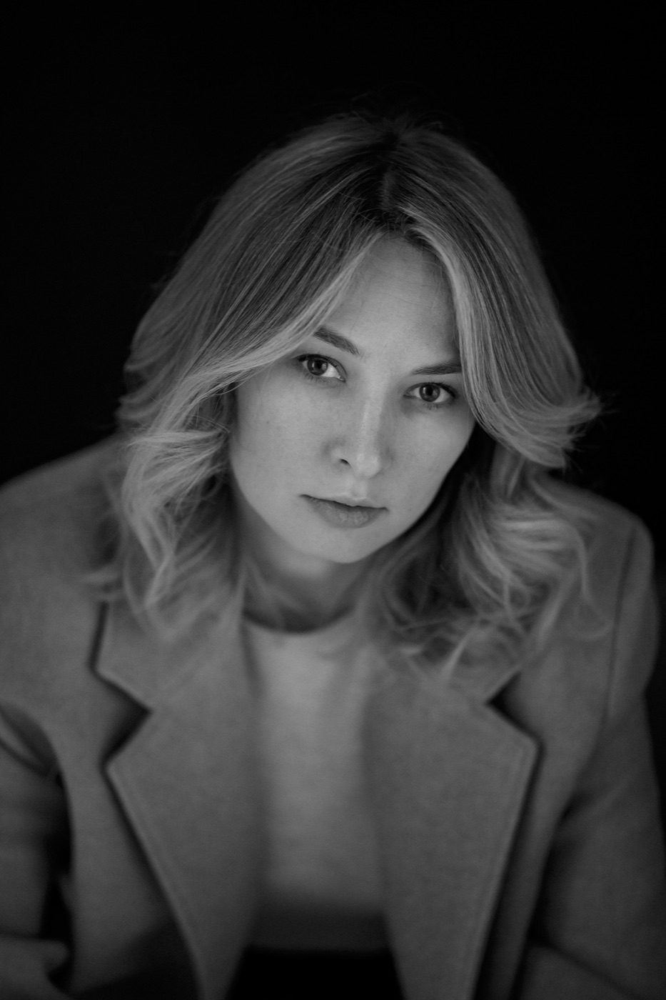
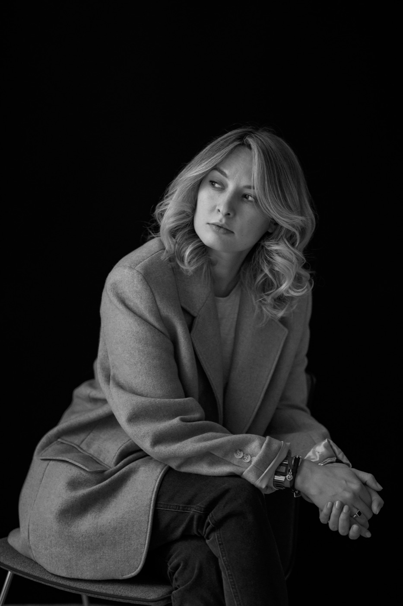

Работаю с теми, кто оказался в сложной рабочей системе или на распутье в карьере. Помогаю увидеть внутренний конфликт за повторяющимся сценарием и найти свой выбор. Без готовых советов, через внимательное слушание и разбор конкретных ситуаций.

Человек приходит и говорит: «Меня здесь не ценят». Он уже не раз менял место, и везде повторяется одно и то же. Я слышу в его рассказе другую фразу: «Я недостаточно хорош». Возвращаю её ему, и мы смотрим, где ещё в его жизни она звучала.
Оказывается, внутри две части: одна хочет расти, другая боится, что её не примут. Это не ошибка, а способ защиты, который когда-то помогал. Когда эта связь становится видна, появляется выбор. И небольшой шаг, который можно попробовать уже на этой неделе.
Это собирательный пример, не история конкретного человека.
Куда бы вы ни шли, с этим не обязательно разбираться в одиночку.
Психодинамический подход исходит из простого: за любой сложностью в работе, отношениях или выборе стоит внутренний конфликт. Его можно увидеть, назвать и смягчить. Я не даю советов: я сопровождаю вас в вашем собственном исследовании.
Это не быстро. Сценарии, которым много лет, за неделю не меняются, и это нормально: то, что вы нашли сами, держится дольше чужого совета.

Я не обещаю, что станет легко. Я обещаю, что мы разберёмся, что с вами происходит, и что у вас появится выбор. Начать можно с бесплатной встречи на 20 минут.
Короткая встреча, чтобы вы рассказали, что вас привело, а я пойму, чем могу быть полезна. Иногда этого уже достаточно, чтобы что-то прояснилось.
Договориться о знакомстве →Когда есть конкретный вопрос, который хочется рассмотреть на одной встрече. Оплата после встречи.
Записаться на сессию →Для глубокой работы: когда за одним вопросом стоит несколько, и важнее разобраться, чем быстро закрыть тему. Встречи раз в неделю, оплата пакетом сразу за 10 сессий.
Обсудить программу →Консультации не являются медицинской помощью и не заменяют лечение. Публичная оферта
Я внимательно слушаю и нахожу связи между тем, что происходит сейчас, и тем, что повторяется годами. Не лезу с советами.
Более 13 лет я занимаюсь обучением и развитием людей в компаниях: от бизнес-тренера до руководителя управления с командой до 25 человек. Я знаю, как устроена рабочая среда изнутри, поэтому со мной не нужно объяснять контекст: мы сразу идём в суть.
Я работаю на основе психодинамического подхода, системной динамики и психоаналитического коучинга. Свою работу регулярно разбираю на супервизии: это часть профессиональной рамки.
Нет. Это коучинг с психодинамическим подходом: мы разбираем ваши ситуации и внутренние конфликты, но не лечим. Если я увижу, что вам нужна терапия или помощь врача, скажу об этом прямо.
Онлайн, 50 минут. Мы разбираем конкретные ситуации из вашей жизни и работы, а в конце вы решаете, какой маленький шаг попробовать.
Зависит от запроса. Для одного конкретного вопроса хватает одной сессии, для глубокой работы есть программа из десяти. После знакомства я честно скажу, что подойдёт вам.
Для этого и нужно знакомство: 20 минут бесплатно, без обязательств. Вы увидите, как мы разговариваем, и решите сами.
Разовая сессия оплачивается после встречи. Программа из десяти сессий оплачивается сразу пакетом, встречи проходят раз в неделю.
Всё, что вы рассказываете на сессиях, остаётся между нами. Свою работу я разбираю на супервизии без имён и деталей, по которым вас можно узнать.
Сложные и токсичные рабочие системы — тема, в которой я работаю особенно глубоко, потому что прошла через неё сама. Как их распознать, как сохранить себя и как уйти с достоинством. Об этом моя книга.
История и метод: как устроены токсичные рабочие системы, почему из них так трудно уйти и как выйти, сохранив себя. Основана на реальном опыте, моём и моих клиентов.
Читать первую главу →Не всё требует личной работы, иногда нужна поддержка под рукой, на каждый день. Вот два бережных инструмента, которые помогают не терять себя в повседневной гонке.
Приложение для женщин, про возвращение к себе. Мягкие ежедневные практики, которые помогают вернуться к себе, когда тревога, усталость или чужие ожидания заглушают всё остальное.
Узнать →Спутник для тех, кто в сложной рабочей среде и пока не может уйти. Помогает распознавать, что происходит, сохранять опору и держать курс, день за днём.
СкороИногда самое трудное это разрешить себе начать. Достаточно одного разговора, чтобы понять, подходим ли мы друг другу и в какую сторону вам хочется идти.
Если пока не готовы к разговору, можно начать с книги или заглянуть в мой блог в Telegram.